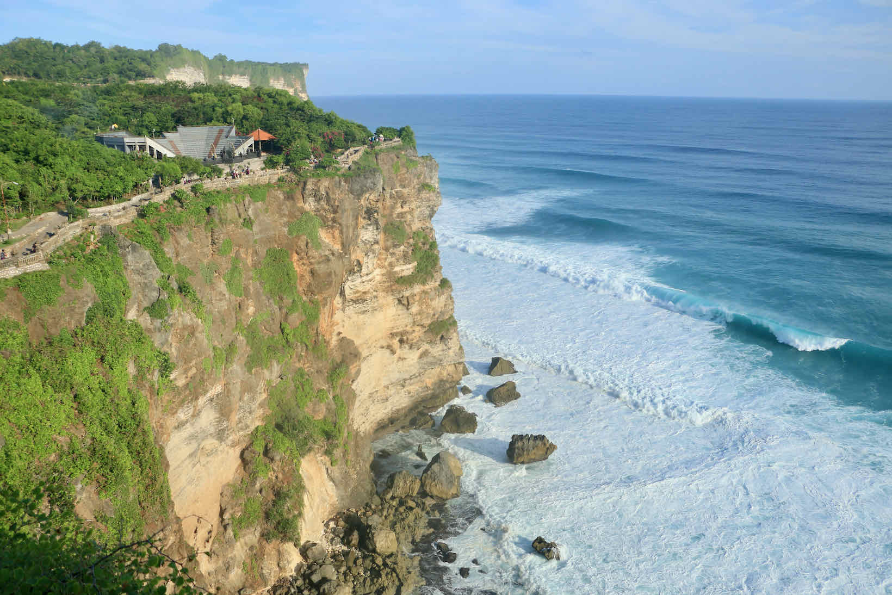

Bali

Bali é um destino exótico conhecido por suas praias paradisíacas e rica cultura local.
Pontos Turísticos
- Templo de Uluwatu
- Floresta dos Macacos de Ubud
- Praia de Kuta
Cuidados a Serem Tomados
- Respeite os templos e costumes locais.
- Leve roupas leves e confortáveis para o clima tropical.
- Cuidado com as correntes marítimas em algumas praias.